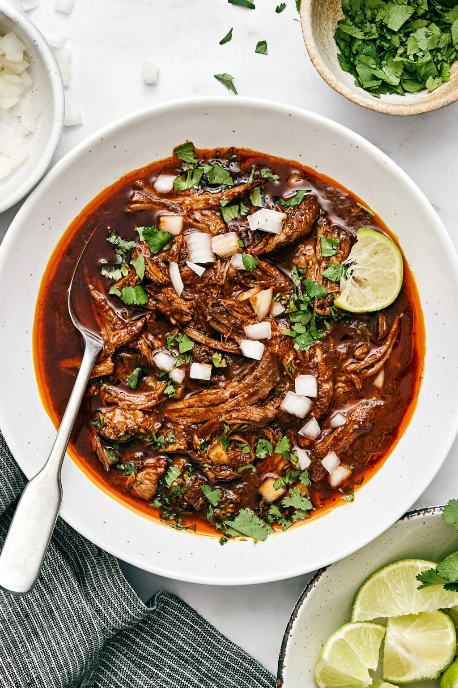

Home
Birria

Description
Mexican birria de res from the heart of Jalisco is a hearty slow-cooked stew with the utmost flavor and juicy, fall-apart tender beef. You can serve it in a bowl with fresh toppings like onion, cilantro, and lime juice, or go the extra step to make cheesy birria tacos.
Let me start by saying there’s no one exact way to make birria. It was originally made with goat meat (birria de chivo), but now, different regions of Mexico have put their own spin on this classic dish with beef as the preferred meat. This Crockpot birria recipe I’m sharing today stems from all the delicious experiences I’ve had with it — from local taco stands in Mexico to authentic, home-cooked versions. Here’s why you’ll love it too:
- It’s similar to barbacoa, but more brothy and spicy. Many of you love my slow cooker barbacoa and carnitas. But if you want a beefy meal that’s juicier and layered with warming, spicy flavors, this slow cooker birria recipe is for you.
- It’s foolproof and easy to make. The only hard part is gathering the right Mexican chiles and then deseeding them. But once that’s done, the rest is easy because the slow cooker does all the work.
- There are multiple ways to enjoy it. Traditionally, you serve it as a deliciously spicy Mexican beef stew you can eat on its own. But you can also use the shredded beef for nachos, quesadillas, and especially tacos. Not just any tacos though, but “quesabirria” dipped in the tastiest consommé. It’s one of the best ways to enjoy this recipe (and possibly my favorite taco ever now).
Ingredients
- 2 dried large ancho chiles
- 2 dried guajillo chiles
- 2-3 dried chiles de árbol
- 3 pounds chuck roast, fat trimmed, cut into 3-inch pieces
- 1 ½ tablespoons kosher salt
- 2 teaspoons freshly cracked black pepper
- 2 tablespoons extra-virgin olive oil
- 1 medium white onion, cut into 4 wedges
- 4 garlic cloves, smashed
- 1 teaspoon ground cinnamon
- 2 teaspoons dried oregano
- 2 teaspoons ground cumin
- 2 bay leaves
- 1 teaspoon ground ginger
- 3 cups beef stock
- 1 tablespoon white vinegar
- 2 (14.5-ounce) cans diced fire roasted tomatoes
Steps
- Cut open the dried chiles with kitchen scissors or a knife and discard the seeds. Heat a large dry skillet over medium-high heat. Toast the chiles, moving them occasionally, for 4 minutes. (See Note)
- Cover the chiles with 2 inches of water. Bring the water to a boil over high heat, then turn the heat off and let the chilis soak until softened, about 15 minutes.
- Meanwhile, preheat the oven to 350°F with a rack in the center position.
- Pat the beef dry with a paper towel and season all over with the salt and pepper.
- Heat the olive oil in a large Dutch oven over medium-high heat. Working in batches as needed, add the chuck and cook, turning, until browned on all sides, about 15-18 minutes total. Transfer to a plate.
- Add the onion wedges to the Dutch oven and cook over medium heat until browned, about 4 minutes. Add the garlic and toss until fragrant, about 1 more minute. Add the cinnamon, oregano, cumin, bay leaves, and ginger to the pan, cook for 1 minute, or until fragrant.
- Add the beef stock and vinegar, using a wooden spoon to scrape any browned bits from the bottom. Remove the pot from heat and allow ingredients to cool slightly.
- Drain the softened chilis (discarding the soaking water) and add them and the tomatoes to the sauce. Use an immersion blender to blend the sauce until smooth, directly in the pan. (Alternatively, transfer 2 cups of the sauce to the base of a blender, let cool briefly, blend until nearly smooth, and then return the sauce to the pan.)
- Return the beef to the Dutch oven and transfer to the oven. Cover and cook until beef is tender and can be pulled apart easily with a fork, about 2 1/2 hours.
- Using 2 forks, shred the beef, discarding any large pieces of fat.
- Serve the beef with the remaining broth in bowls garnished with chopped onion and cilantro, in warm tortillas, as a filling for quesadillas, or try our Birria Tacos!